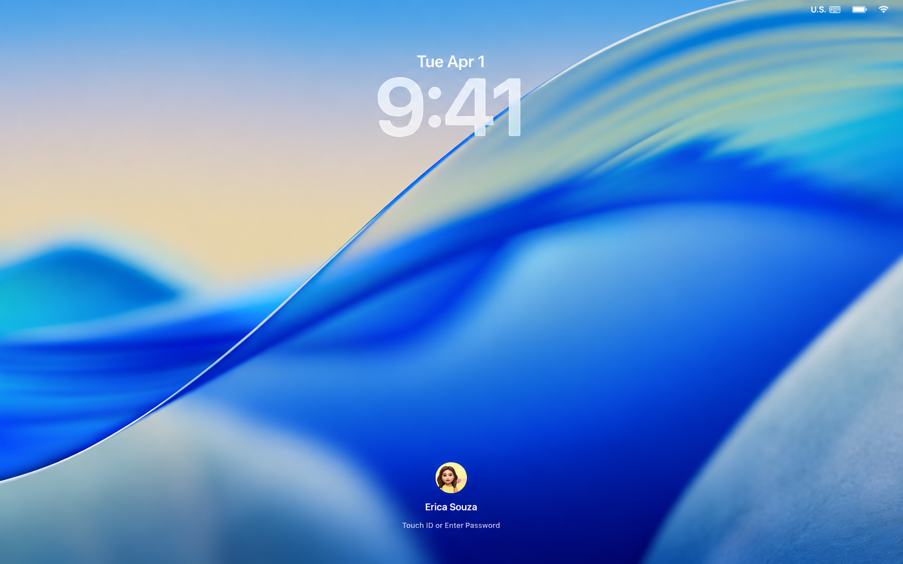

foldelight
AGPL-3.0
Folds since 1991. Effect shipped today.
foldelight adds the folding-glass effect seen on the iPhone Duo to your MacBook lid.
Open the lid

Adds no features. Settles one debt.
Check out the repo